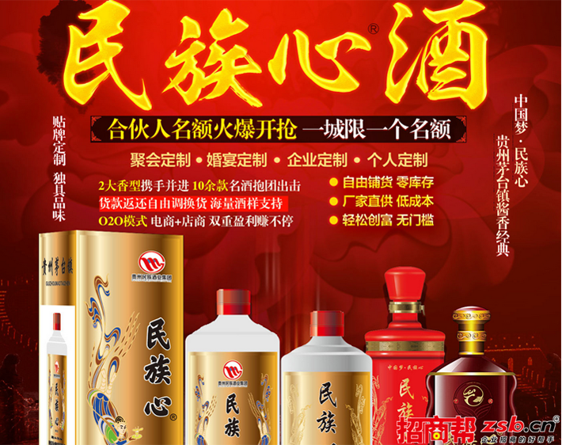
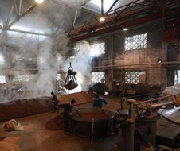

民族心白酒创造酱香典范，塑造中国梦传奇
2018-04-20 10:00
中国人善于饮酒，酒在中国，不只是一种烈性饮品，而是与历史紧密捆绑的文化，具有精神文化价值。饮酒不是为饮酒而饮酒，它也是在饮文化。而早在中国古代，先人们早已形成酒情怀，中国人善于饮酒，酒在中国，不只是一种烈性饮品，而是与历史紧密捆绑的文化，具有精神文化价值。饮酒不是为饮酒而饮酒，它也是在饮文化，然而先人们早已形成酒情怀。
酿造所采用的原料及工艺不同，有的是高粱，有的是大米；所选用的糖化发酵剂不同，有的是大麦和豌豆制成的中温大曲，有的是小麦制成的中温大曲或高温大曲，所处酿造环境的气候条件不同，有的干湿度高，有的干湿度低，有的气温高，有的气温低等。因此，各个厂家所酿制的酒品，其香韵特点也就各不一样。
中国人善于饮酒，酒在中国，不只是一种烈性饮品，而是与历史紧密捆绑的文化，具有精神文化价值。饮酒不是为饮酒而饮酒，它也是在饮文化。而早在中国古代，先人们早已形成酒情怀，中国人善于饮酒，酒在中国，不只是一种烈性饮品，而是与历史紧密捆绑的文化，具有精神文化价值。饮酒不是为饮酒而饮酒，它也是在饮文化，然而先人们早已形成酒情怀。
酿造所采用的原料及工艺不同，有的是高粱，有的是大米；所选用的糖化发酵剂不同，有的是大麦和豌豆制成的中温大曲，有的是小麦制成的中温大曲或高温大曲，所处酿造环境的气候条件不同，有的干湿度高，有的干湿度低，有的气温高，有的气温低等。因此，各个厂家所酿制的酒品，其香韵特点也就各不一样。
相关资讯
-

你知道白酒是怎么酿造的吗？
2018-04-20 6590人看过
-

民族心白酒创造酱香典范，塑造中国梦传奇！
2018-04-20 6590人看过